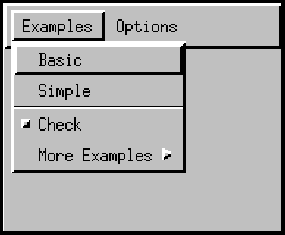

Class CheckboxMenuItem
- All Implemented Interfaces:
ItemSelectable, Serializable, Accessible
The following picture depicts a menu which contains an instance
of CheckBoxMenuItem:

The item labeled Check shows a check box menu item
in its "off" state.
When a check box menu item is selected, AWT sends an item event to
the item. Since the event is an instance of ItemEvent,
the processEvent method examines the event and passes
it along to processItemEvent. The latter method redirects
the event to any ItemListener objects that have
registered an interest in item events generated by this menu item.
- Since:
- 1.0
- See Also:
-
Nested Class Summary
Nested ClassesModifier and TypeClassDescriptionprotected classInner class of CheckboxMenuItem used to provide default support for accessibility.Nested classes/interfaces declared in class MenuItem
MenuItem.AccessibleAWTMenuItemModifier and TypeClassDescriptionprotected classInner class of MenuItem used to provide default support for accessibility.Nested classes/interfaces declared in class MenuComponent
MenuComponent.AccessibleAWTMenuComponentModifier and TypeClassDescriptionprotected classInner class ofMenuComponentused to provide default support for accessibility. -
Constructor Summary
ConstructorsConstructorDescriptionCreate a check box menu item with an empty label.CheckboxMenuItem(String label) Create a check box menu item with the specified label.CheckboxMenuItem(String label, boolean state) Create a check box menu item with the specified label and state. -
Method Summary
Modifier and TypeMethodDescriptionvoidAdds the specified item listener to receive item events from this check box menu item.voidCreates the peer of the checkbox item.Gets the AccessibleContext associated with this CheckboxMenuItem.Returns an array of all the item listeners registered on this checkbox menuitem.<T extends EventListener>
T[]getListeners(Class<T> listenerType) Returns an array of all the objects currently registered asFooListeners upon thisCheckboxMenuItem.Object[]Returns the array (length 1) containing the checkbox menu item label or null if the checkbox is not selected.booleangetState()Determines whether the state of this check box menu item is "on" or "off."Returns a string representing the state of thisCheckBoxMenuItem.protected voidProcesses events on this check box menu item.protected voidProcesses item events occurring on this check box menu item by dispatching them to any registeredItemListenerobjects.voidRemoves the specified item listener so that it no longer receives item events from this check box menu item.voidsetState(boolean b) Sets this check box menu item to the specified state.Methods declared in class MenuItem
addActionListener, deleteShortcut, disable, disableEvents, enable, enable, enableEvents, getActionCommand, getActionListeners, getLabel, getShortcut, isEnabled, processActionEvent, removeActionListener, setActionCommand, setEnabled, setLabel, setShortcutModifier and TypeMethodDescriptionvoidAdds the specified action listener to receive action events from this menu item.voidDelete anyMenuShortcutobject associated with this menu item.voiddisable()Deprecated.protected final voiddisableEvents(long eventsToDisable) Disables event delivery to this menu item for events defined by the specified event mask parameter.voidenable()Deprecated.As of JDK version 1.1, replaced bysetEnabled(boolean).voidenable(boolean b) Deprecated.As of JDK version 1.1, replaced bysetEnabled(boolean).protected final voidenableEvents(long eventsToEnable) Enables event delivery to this menu item for events to be defined by the specified event mask parameterGets the command name of the action event that is fired by this menu item.Returns an array of all the action listeners registered on this menu item.getLabel()Gets the label for this menu item.Get theMenuShortcutobject associated with this menu item,booleanChecks whether this menu item is enabled.protected voidProcesses action events occurring on this menu item, by dispatching them to any registeredActionListenerobjects.voidRemoves the specified action listener so it no longer receives action events from this menu item.voidsetActionCommand(String command) Sets the command name of the action event that is fired by this menu item.voidsetEnabled(boolean b) Sets whether or not this menu item can be chosen.voidSets the label for this menu item to the specified label.voidSet theMenuShortcutobject associated with this menu item.Methods declared in class MenuComponent
dispatchEvent, getFont, getName, getParent, getTreeLock, postEvent, removeNotify, setFont, setName, toStringModifier and TypeMethodDescriptionfinal voidDelivers an event to this component or one of its sub components.getFont()Gets the font used for this menu component.getName()Gets the name of the menu component.Returns the parent container for this menu component.protected final ObjectGets this component's locking object (the object that owns the thread synchronization monitor) for AWT component-tree and layout operations.booleanDeprecated.As of JDK version 1.1, replaced bydispatchEvent.voidRemoves the menu component's peer.voidSets the font to be used for this menu component to the specified font.voidSets the name of the component to the specified string.toString()Returns a representation of this menu component as a string.Methods declared in class Object
clone, equals, finalize, getClass, hashCode, notify, notifyAll, wait, wait, waitModifier and TypeMethodDescriptionprotected Objectclone()Creates and returns a copy of this object.booleanIndicates whether some other object is "equal to" this one.protected voidfinalize()Deprecated, for removal: This API element is subject to removal in a future version.Finalization is deprecated and subject to removal in a future release.final Class<?> getClass()Returns the runtime class of thisObject.inthashCode()Returns a hash code value for this object.final voidnotify()Wakes up a single thread that is waiting on this object's monitor.final voidWakes up all threads that are waiting on this object's monitor.final voidwait()Causes the current thread to wait until it is awakened, typically by being notified or interrupted.final voidwait(long timeoutMillis) Causes the current thread to wait until it is awakened, typically by being notified or interrupted, or until a certain amount of real time has elapsed.final voidwait(long timeoutMillis, int nanos) Causes the current thread to wait until it is awakened, typically by being notified or interrupted, or until a certain amount of real time has elapsed.
-
Constructor Details
-
CheckboxMenuItem
Create a check box menu item with an empty label. The item's state is initially set to "off."- Throws:
HeadlessException- if GraphicsEnvironment.isHeadless() returns true- Since:
- 1.1
- See Also:
-
CheckboxMenuItem
Create a check box menu item with the specified label. The item's state is initially set to "off."- Parameters:
label- a string label for the check box menu item, ornullfor an unlabeled menu item.- Throws:
HeadlessException- if GraphicsEnvironment.isHeadless() returns true- See Also:
-
CheckboxMenuItem
Create a check box menu item with the specified label and state.- Parameters:
label- a string label for the check box menu item, ornullfor an unlabeled menu item.state- the initial state of the menu item, wheretrueindicates "on" andfalseindicates "off."- Throws:
HeadlessException- if GraphicsEnvironment.isHeadless() returns true- Since:
- 1.1
- See Also:
-
-
Method Details
-
addNotify
-
getState
public boolean getState()Determines whether the state of this check box menu item is "on" or "off."- Returns:
- the state of this check box menu item, where
trueindicates "on" andfalseindicates "off" - See Also:
-
setState
public void setState(boolean b) Sets this check box menu item to the specified state. The boolean valuetrueindicates "on" whilefalseindicates "off."Note that this method should be primarily used to initialize the state of the check box menu item. Programmatically setting the state of the check box menu item will not trigger an
ItemEvent. The only way to trigger anItemEventis by user interaction.- Parameters:
b-trueif the check box menu item is on, otherwisefalse- See Also:
-
getSelectedObjects
Returns the array (length 1) containing the checkbox menu item label or null if the checkbox is not selected.- Specified by:
getSelectedObjectsin interfaceItemSelectable- Returns:
- the list of selected objects, or
null - See Also:
-
addItemListener
Adds the specified item listener to receive item events from this check box menu item. Item events are sent in response to user actions, but not in response to calls to setState(). If l is null, no exception is thrown and no action is performed.Refer to AWT Threading Issues for details on AWT's threading model.
- Specified by:
addItemListenerin interfaceItemSelectable- Parameters:
l- the item listener- Since:
- 1.1
- See Also:
-
removeItemListener
Removes the specified item listener so that it no longer receives item events from this check box menu item. If l is null, no exception is thrown and no action is performed.Refer to AWT Threading Issues for details on AWT's threading model.
- Specified by:
removeItemListenerin interfaceItemSelectable- Parameters:
l- the item listener- Since:
- 1.1
- See Also:
-
getItemListeners
Returns an array of all the item listeners registered on this checkbox menuitem.- Returns:
- all of this checkbox menuitem's
ItemListeners or an empty array if no item listeners are currently registered - Since:
- 1.4
- See Also:
-
getListeners
Returns an array of all the objects currently registered asFooListeners upon thisCheckboxMenuItem.FooListeners are registered using theaddFooListenermethod.You can specify the
listenerTypeargument with a class literal, such asFooListener.class. For example, you can query aCheckboxMenuItem cfor its item listeners with the following code:ItemListener[] ils = (ItemListener[])(c.getListeners(ItemListener.class));
If no such listeners exist, this method returns an empty array.- Overrides:
getListenersin classMenuItem- Type Parameters:
T- the type of the listeners- Parameters:
listenerType- the type of listeners requested; this parameter should specify an interface that descends fromjava.util.EventListener- Returns:
- an array of all objects registered as
FooListeners on this checkbox menuitem, or an empty array if no such listeners have been added - Throws:
ClassCastException- iflistenerTypedoesn't specify a class or interface that implementsjava.util.EventListener- Since:
- 1.3
- See Also:
-
processEvent
Processes events on this check box menu item. If the event is an instance ofItemEvent, this method invokes theprocessItemEventmethod. If the event is not an item event, it invokesprocessEventon the superclass.Check box menu items currently support only item events.
Note that if the event parameter is
nullthe behavior is unspecified and may result in an exception.- Overrides:
processEventin classMenuItem- Parameters:
e- the event- Since:
- 1.1
- See Also:
-
processItemEvent
Processes item events occurring on this check box menu item by dispatching them to any registeredItemListenerobjects.This method is not called unless item events are enabled for this menu item. Item events are enabled when one of the following occurs:
- An
ItemListenerobject is registered viaaddItemListener. - Item events are enabled via
enableEvents.
Note that if the event parameter is
nullthe behavior is unspecified and may result in an exception.- Parameters:
e- the item event- Since:
- 1.1
- See Also:
- An
-
paramString
Returns a string representing the state of thisCheckBoxMenuItem. This method is intended to be used only for debugging purposes, and the content and format of the returned string may vary between implementations. The returned string may be empty but may not benull.- Overrides:
paramStringin classMenuItem- Returns:
- the parameter string of this check box menu item
-
getAccessibleContext
Gets the AccessibleContext associated with this CheckboxMenuItem. For checkbox menu items, the AccessibleContext takes the form of an AccessibleAWTCheckboxMenuItem. A new AccessibleAWTCheckboxMenuItem is created if necessary.- Specified by:
getAccessibleContextin interfaceAccessible- Overrides:
getAccessibleContextin classMenuItem- Returns:
- an AccessibleAWTCheckboxMenuItem that serves as the AccessibleContext of this CheckboxMenuItem
- Since:
- 1.3
-
setEnabled(boolean).